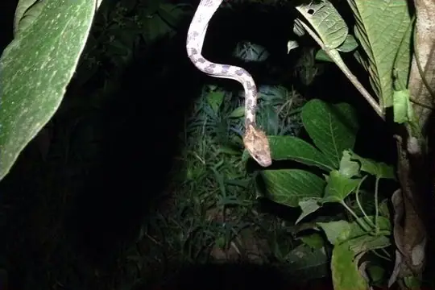
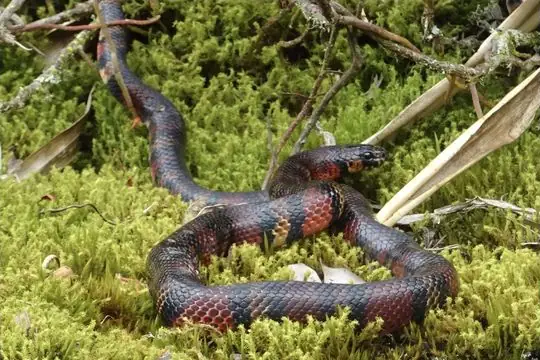
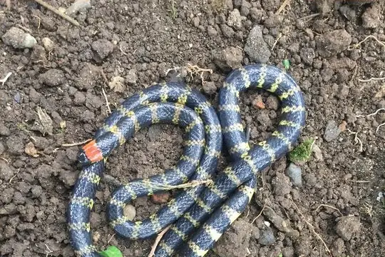

Snakes of Esmeraldas
A province of Ecuador
38 living snake species are recorded in Esmeraldas, a province of Ecuador, in SnakeList's data: 8 venomous and 30 non-venomous, from 5 families. 70 more are possible: recorded in Ecuador without province detail.
- 38living species
- 8venomous
- 30non-venomous
- 5families
- 70more possible
Esmeraldas is a province of Ecuador. SnakeList records where snakes live by province, not by exact spot, so a species counted here may live in only part of it. The counts are unique living species; fossils, extinct species and introduced snakes are listed apart. All snakes of Ecuador.
The 38 living species recorded in Esmeraldas
Every living snake species SnakeList records in Esmeraldas. Each is recorded somewhere in the province, not necessarily all over it.
- Andean Snail-eater Dipsas andiana
- Banded Centipede Snake Tantilla supracincta
- Banded Ground Snake Atractus multicinctus
- Bicolored Shadow Snake Synophis bicolor
- Big-scaled Blind Snake Trilepida macrolepis
- Black Milksnake Lampropeltis micropholis
- Blomber’s Tree Boa Corallus blombergi
- Capuchin Coral Snake Micrurus dumerilii venomous
- Cauca Coral Snake Micrurus multiscutatus venomous
- Chocoan Blunt-headed Vine Snake Imantodes chocoensis
- Chocoan Bushmaster Lachesis acrochorda venomous
- Chocoan Forest Pit Viper Bothrops punctatus venomous
- Clark's Forest Racer Dendrophidion clarkii
- Clark's Ground Snake Atractus clarki
- Colombian Boa Boa imperator
- Cope's Tropical Racer Mastigodryas pulchriceps
- Despax's Ground Snake Atractus paucidens
- Ecuador Sipo Chironius grandisquamis
- Ecuadorian Toadhead Bothrocophias campbelli venomous
- Fer-de-lance Bothrops asper venomous
- Fiddle-string Snake Imantodes cenchoa
- Graceful Snail-eater Dipsas gracilis
- Hognosed Pit Viper Porthidium nasutum venomous
- Iridescent Ground Snake Atractus iridescens
- Klauber's Blind Snake Epictia subcrotilla
- Marley’s Snail-eating Snake Sibon marleyae
- Mocquard's Swamp Snake Tretanorhinus mocquardi
- Ornate Cat-eyed Snake Leptodeira ornata
- Redtail Coral Snake Micrurus mipartitus venomous
- Ribboned Brittle-Snake Urotheca lateristriga
- Shropshire's Puffing Snake Phrynonax shropshirei
- Sipo (flavopictus) Chironius flavopictus
- Slender Forest-Racer Dendrophidion graciliverpa
- Temporal Snail-eater Dipsas temporalis
- Typhon Ground Snake Atractus typhon
- Vieira's Snail-eating Snake Sibon vieirai
- Yellowbelly Snake Coniophanes fissidens
- Ninia teresitae
No snake here matches that.
Possible here: country-level records only
SnakeList records these 70 species in Ecuador without saying in which province, so each may or may not live in Esmeraldas. They are not counted among the species recorded here.
- Amazon Banded Snake Rhinobothryum lentiginosum
- Amazon Coastal House Snake Thamnodynastes pallidus
- Amazon Coral Snake Micrurus spixii venomous
- Andean Racer Pseudalsophis elegans
- Andes Centipede Snake Tantilla andinista
- Banded Galapagos Snake Pseudalsophis slevini
- Bassler's Snake Eutrachelophis bassleri
- Battersby's Dwarf Boa Tropidophis battersbyi
- Boie's Ground Snake Atractus badius
- Brown Vinesnake Oxybelis aeneus
- Catamayo Coral Snake Micrurus catamayensis venomous
- Central Sipo (quadricarinatus) Chironius quadricarinatus
- Cerberus Groundsnake Atractus cerberus
- Common Green Racer Chlorosoma viridissimum
- Desert Coral Snake Micrurus tschudii venomous
- Discovery Ground Snake Atractus discovery
- Dunn's Snail Sucker Sibon dunni
- Ecuador Blind Snake Anomalepis flavapices
- Ecuadorean Ground Snake Atractus ecuadorensis
- Emerald Tree Boa Corallus caninus
- Eyelash Viper Bothriechis schlegelii venomous
- Forest Racer Dendrophidion bivittatus
- Indistinct Groundsnake Atractus esepe
- Jubones Cat-eyed Snake Leptodeira misinawui
- La Salle's Shadow Snake Synophis lasallei
- Langsdorff's Coral Snake Micrurus langsdorffi venomous
- Lonely Spotbelly-Snake Coniophanes longinquus
- Military Ground Snake Erythrolamprus miliaris
- Miyata's Centipede Snake Tantilla miyatai
- Myopic Shadow Snake Emmochliophis miops
- Neckband Ground Snake Atractus torquatus
- Northeastern Puffing Snake Phrynonax polylepis
- Northern Eyelash Boa Trachyboa boulengeri
- Oswaldo Báez’ Snail-Eater Dipsas oswaldobaezi
- Pachacamac Ground Snake Atractus snethlageae
- Parrot Snake Leptophis ahaetulla
- Peru Coral Snake Micrurus peruvianus venomous
- Peru Snail-eater Dipsas peruana
- Peters' Coral Snake Micrurus petersi venomous
- Peters' Forest Racer Dendrophidion nuchale
- Pyron's Groundsnake Atractus pyroni
- Red-headed Glasstail Urotheca fulviceps
- Ringed Snail Sucker Sibon annulatus
- Ringed Tree Boa Corallus annulatus
- Roule's Ground Snake Atractus roulei
- Savage's Groundsnake Atractus savagei
- Short Ground Snake Erythrolamprus breviceps
- Sipo (carinatus) Chironius carinatus
- South American Coral Snake Micrurus lemniscatus venomous
- South American Forest Racer Dendrophidion percarinatum
- Southern Eyelash Boa Trachyboa gularis
- Spix's Sipo Chironius spixii
- Striped Swamp Snake Tretanorhinus taeniatus
- Triangle Water Snake Hydrops triangularis
- Tucuman Threadsnake Epictia albipuncta
- Variegated Snail-eater Dipsas variegata
- Venezuela Snail-eater Dipsas latifrontalis
- Wagler's Blind Snake Epictia albifrons
- Wagler's Sipo Chironius scurrulus
- Zamoran Shadow Snake Synophis zamora
- Dipsas oligozonata
- Erythrolamprus albiventris
- Erythrolamprus epinephelus
- Erythrolamprus fraseri
- Erythrolamprus lamonae
- Erythrolamprus oligolepis
- Erythrolamprus subocularis
- Erythrolamprus taeniogaster
- Thamnodynastes silvai
- Tropidophis cacuangoae
No snake here matches that.
Venomous and non-venomous
Venomous: 8 of 38Non-venomous: 30
8 are listed by SnakeList as dangerous to people: Capuchin Coral Snake Micrurus dumerilii, Cauca Coral Snake Micrurus multiscutatus, Chocoan Bushmaster Lachesis acrochorda, Chocoan Forest Pit Viper Bothrops punctatus, Ecuadorian Toadhead Bothrocophias campbelli, Fer-de-lance Bothrops asper, Hognosed Pit Viper Porthidium nasutum, Redtail Coral Snake Micrurus mipartitus.
Snake families
Living species recorded here, by family.
Habitats from reviewed species accounts
What SnakeList’s reviewed, sourced accounts say about where each species lives in general, across its range. They do not describe Esmeraldas in particular. The other 37 species here have no reviewed account yet, so nothing is said about their habitats.
- Fer-de-lance Bothrops asper: Mainly humid lowland forest, but it adapts well to disturbed land: plantations, pastures, riverbanks and the edges of towns. It has been recorded from sea level up to about 2,640 m. Source: Animal Diversity Web, University of Michigan, Wikipedia.
Neighbouring places
Places in SnakeList that share a border with Esmeraldas, with their living species.
Most recorded worldwide
A global ranking, not a local one. These are the species here with research-grade iNaturalist records in the most places across their whole range (worldwide records). SnakeList has no counts of records within Esmeraldas, so this says nothing about which snakes are commonest here.
 Colombian BoaBoa imperator
Colombian BoaBoa imperator Fer-de-lanceBothrops asper
Fer-de-lanceBothrops asper Fiddle-string SnakeImantodes cenchoa
Fiddle-string SnakeImantodes cenchoa
Ornate Cat-eyed SnakeLeptodeira ornata
Black MilksnakeLampropeltis micropholis Yellowbelly SnakeConiophanes fissidens
Yellowbelly SnakeConiophanes fissidens Hognosed Pit ViperPorthidium nasutum
Hognosed Pit ViperPorthidium nasutum
Redtail Coral SnakeMicrurus mipartitus
Who described them
The scientists who first described the species above, and when.
- Colombian Boa Boa imperator -
- Fer-de-lance Bothrops asper - described by Garman in 1883 (under another genus name)
- Fiddle-string Snake Imantodes cenchoa -
- Ornate Cat-eyed Snake Leptodeira ornata -
- Black Milksnake Lampropeltis micropholis -
- Yellowbelly Snake Coniophanes fissidens -
- Hognosed Pit Viper Porthidium nasutum -
- Redtail Coral Snake Micrurus mipartitus -
Names and dates come from SnakeList’s reviewed species accounts; the others are looked up on Wikidata (CC0) when this page opens.